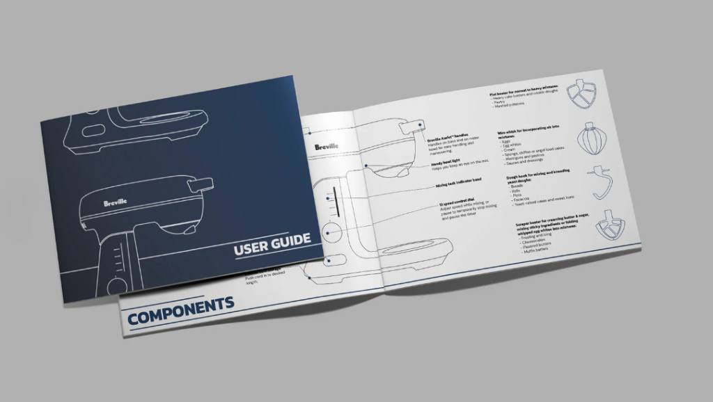
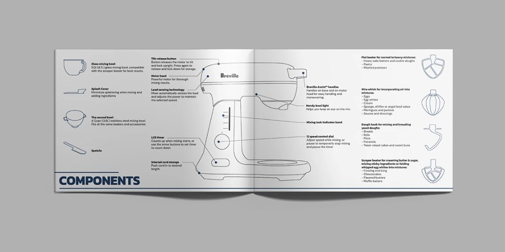
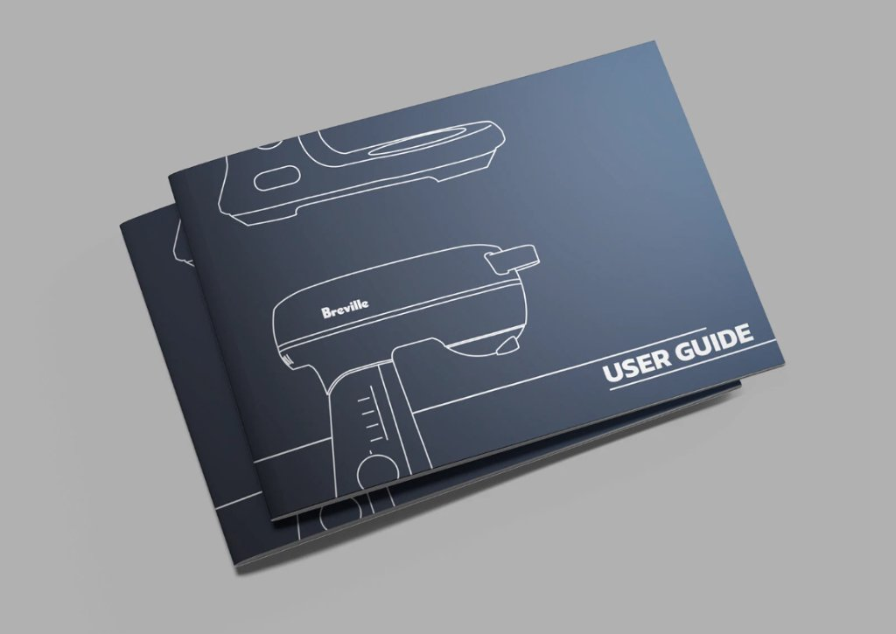
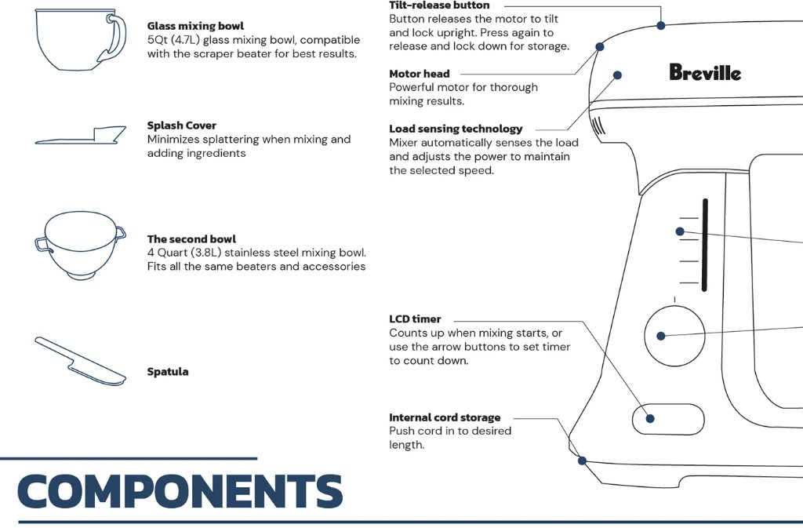

Breville Mixer
Disseny gràfic i experiència d'usuari d'un manual d'instruccions pensat per facilitar la comprensió i l'ús quotidià d'una màquina batedora.
Transformar un manual tècnic d'electrodomèstic en una guia visual clara, jerarquitzada i immediata per a l'usuari final.
El projecte aplica principis de disseny gràfic i experiència d'usuari per fer comprensibles els controls, els accessoris i les funcions d'una batedora Breville sense sobrecarregar el lector. Cada component s'il·lustra mitjançant dibuix vectorial precís i línies d'anotació netes.



Projecte acadèmic orientat a unir el disseny gràfic editorial i l'experiència d'usuari per fer més accessible la documentació tècnica de producte.
Veure projecte a Behance